6.s198 Assignment 1 Submission
Wei Low
Feb. 8th 2015
MoleMash
This app is a virtual version of the classic "whack-a-mole" game. Via the MoleMash tutorial, I learned about how to use timers, procedures and how to set parameters in the MIT AppInventor 2 environment. Click the following links to download the apk and aia files.
Changes to the original MoleMash tutorial implemented include:
- Start Button: instead of the mole moving around once the app is opened, the user must first press "Start" to begin playing. Basically instead of TimerEnabled and TimerAlwaysFires being set to "true" at the opening of the app, these variables are set to true once the Start Button is pressed
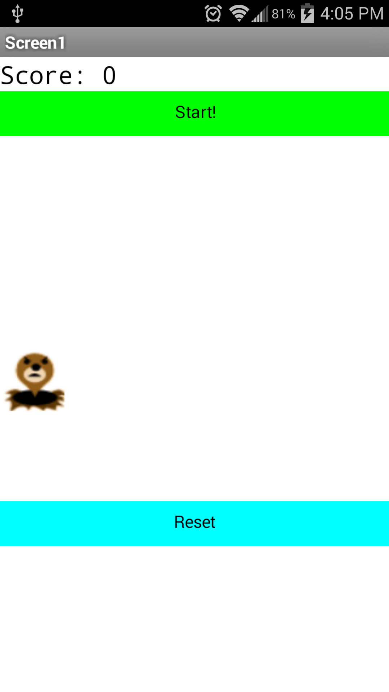
- Increased speed: each time the score of the user increases, the TimerInterval will decrease by 10%, making the movement of the mole faster and faster
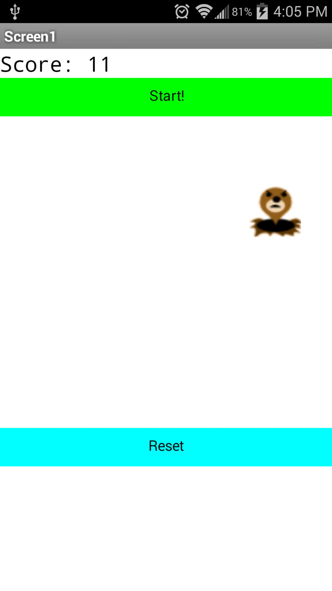
- Reset Button: when pressed, TimerEnabled and TimerAlwaysFires are set to "false" and the mole stops moving. The score is also reset.
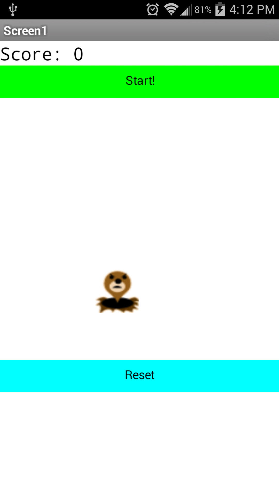
- Finally, here are some blocks from the MIT App Inventor 2 IDE:
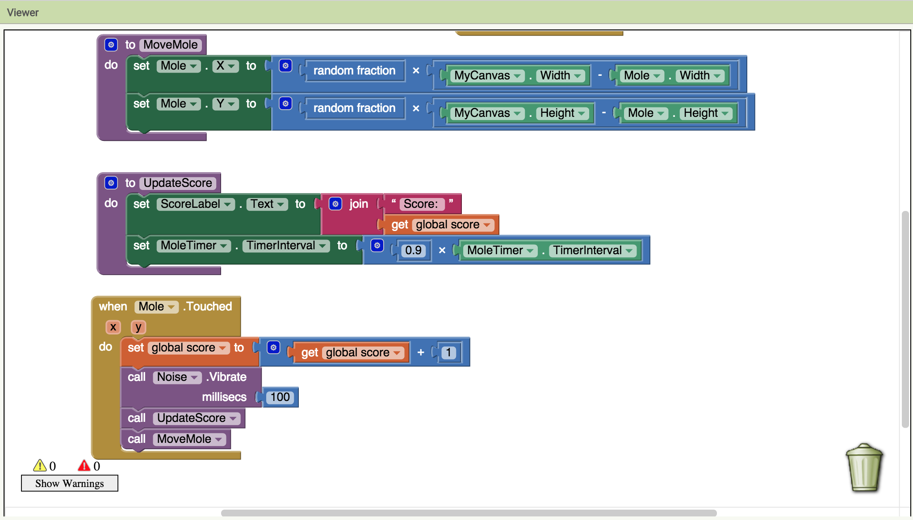
Quiz Me
This app gives the user the ability to input answers to a quiz. Via the QuizMe tutorial, I learned how lists are created and how to compare user inputed text data. Click the following links to download the apk and aia files.
Changes to the original QuizMe tutorial implemented include:
- Disabling case-senstive input: regardless of where the user includes capitalization in their answer, the application will make their answer as correct as long as the spelling is correct
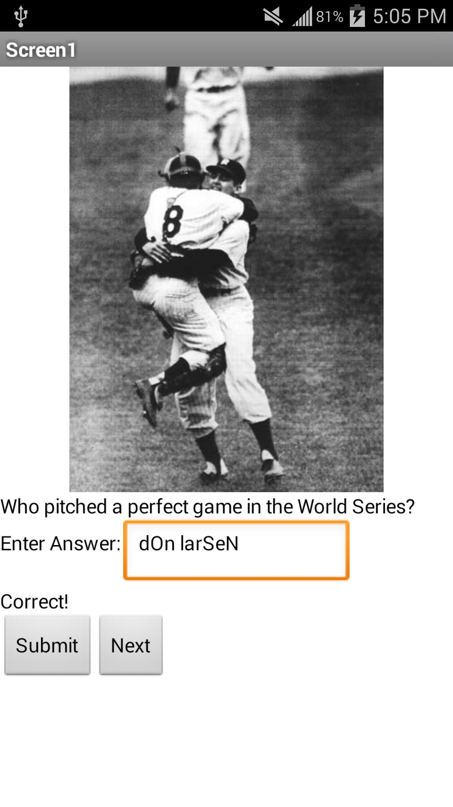
- Theme Change: instead of answering baseball trivia, the user must now answer questions about animals. The photos, questions and answers were changed.
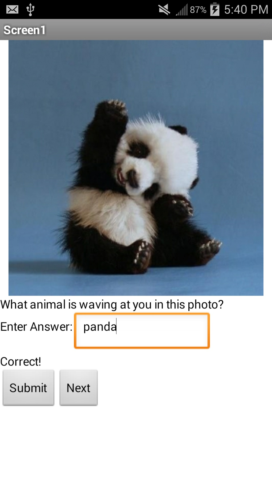
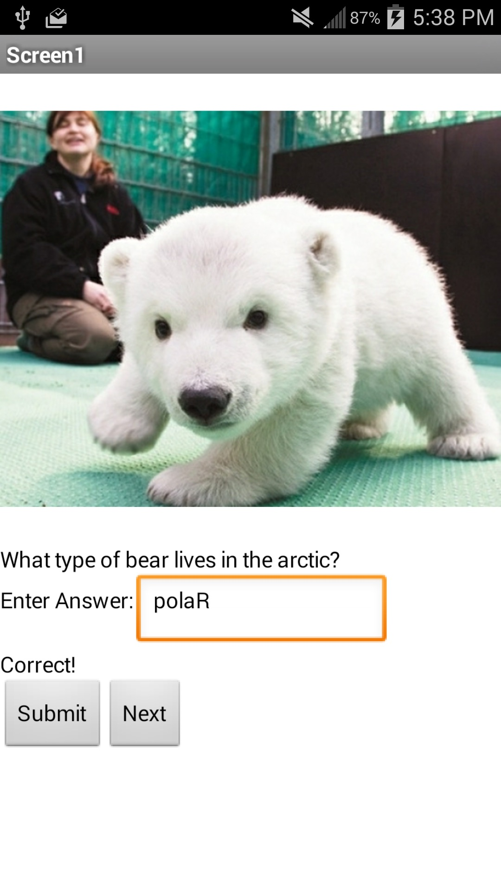
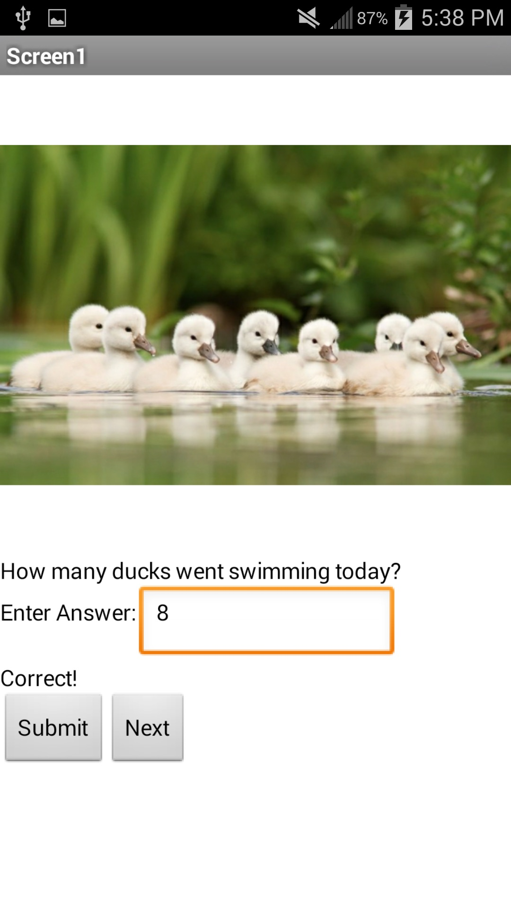
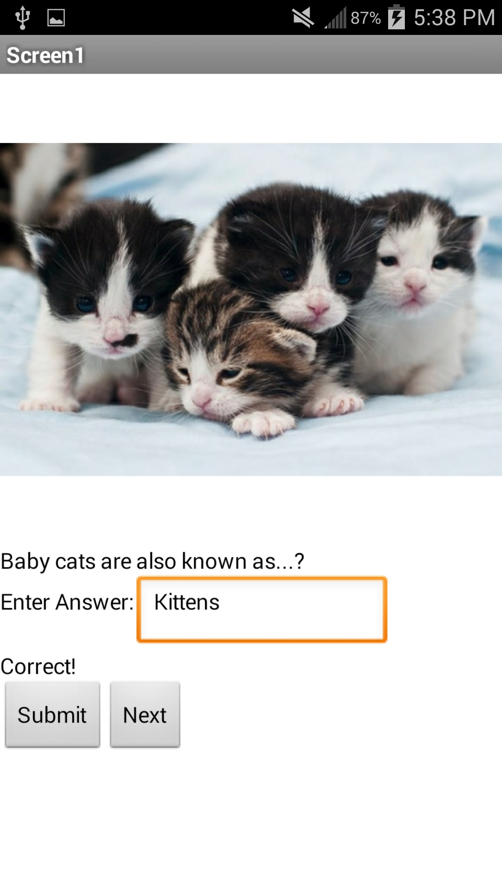
- Finally, here are some blocks from the MIT App Inventor 2 IDE:
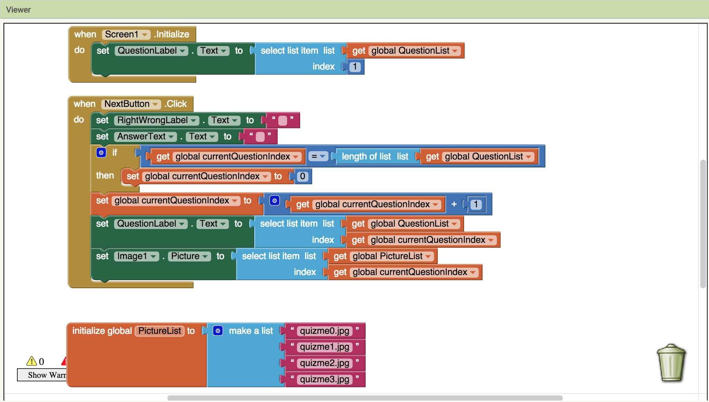
Resistance
This app is to be used along the social card game "Resistance" helps identify if players are spies. The user need only fill out a series of check boxes to determine if someone is a spy or not. Click the following links to download the apk and aia files.
Here are some images documenting its usage:
- Start Screen/Reset Screen: when either the start or reset button is pressed, the checkboxes are cleared
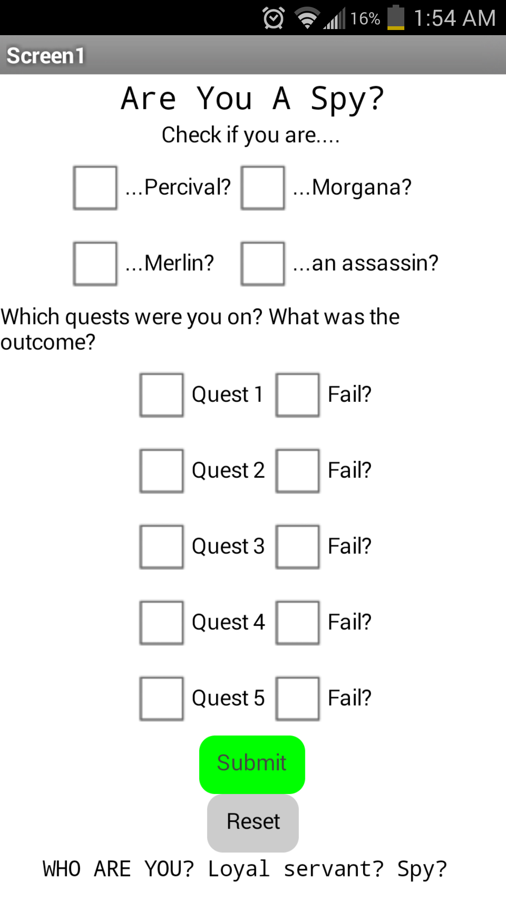
- Some examples of "game" play:
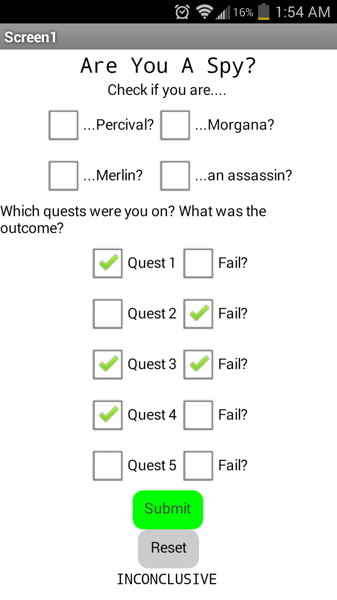
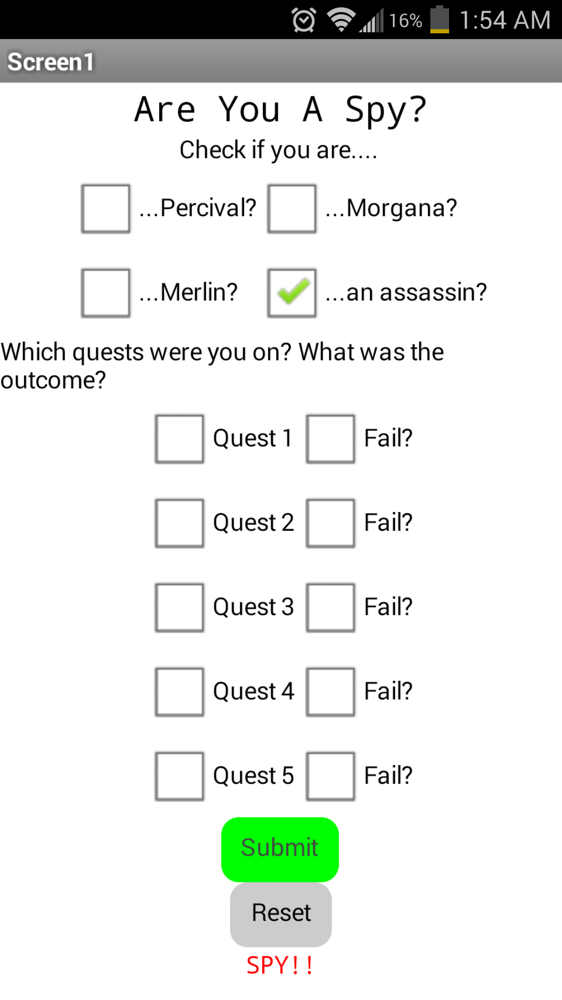
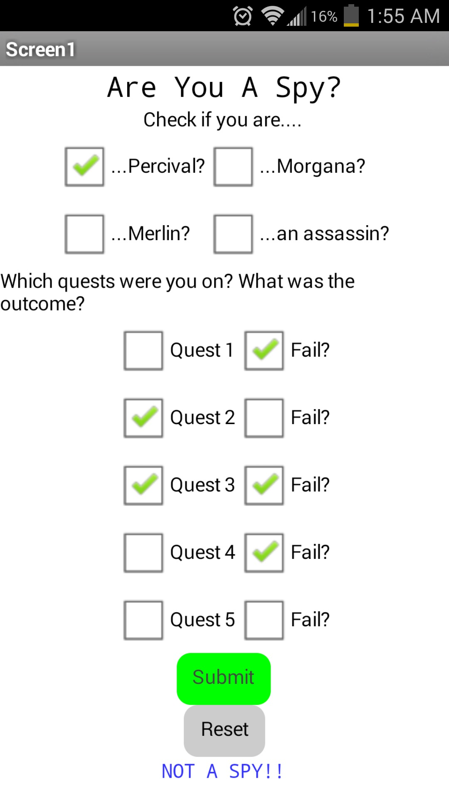
- Finally, here are some blocks from the MIT App Inventor 2 IDE:
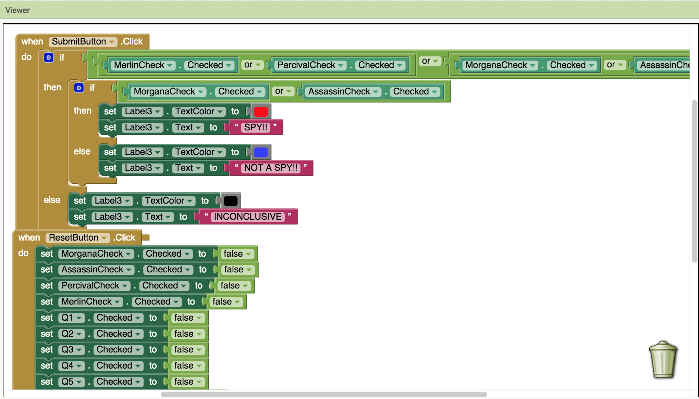
MetAFriend
This simple app allows me to text a new friend my contact information. All I have to do is put in their name and phone number, while the app takes care of the rest! Click the following links to download the apk and aia files.
Here are some images documenting its usage:
- Start Screen:

- Message Sent:

- Proof: please note, for testing purposes, the message was sent from my phone to my own phone number.
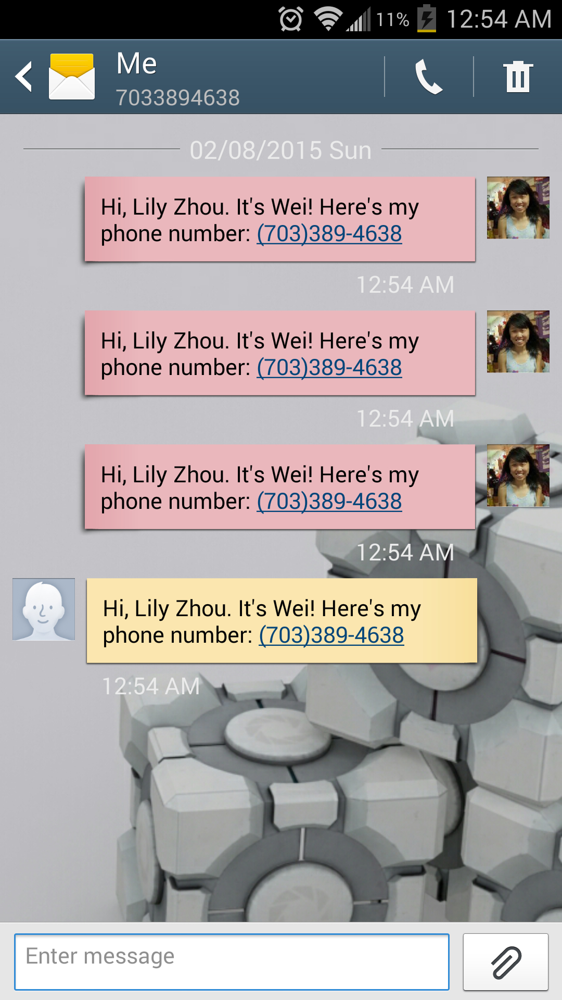
- Finally, here are some blocks from the MIT App Inventor 2 IDE:
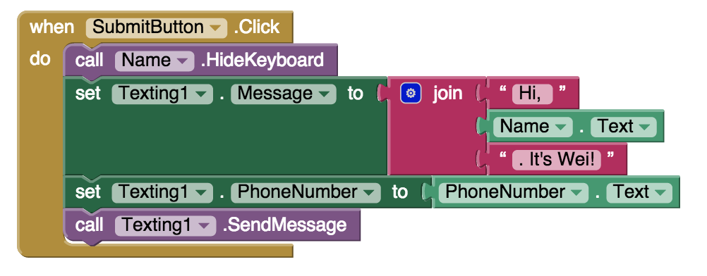